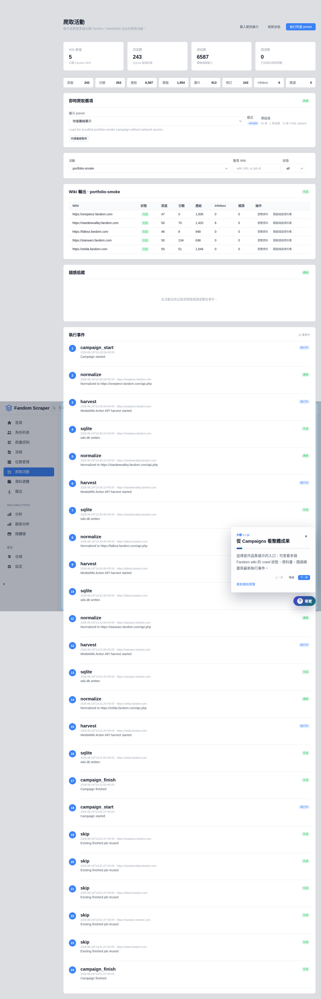
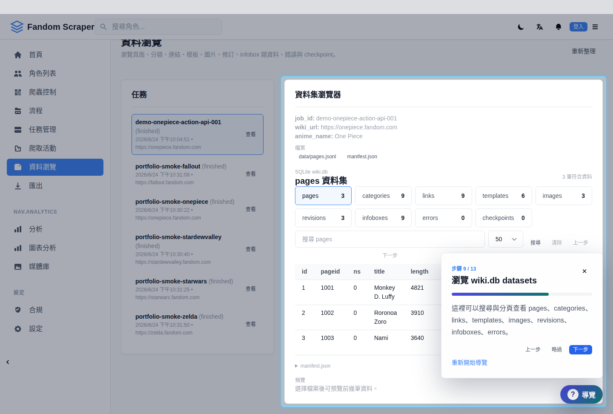
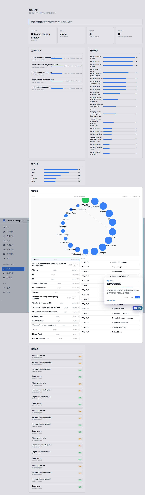

Portfolio Demo
Fandom / MediaWiki Scraper Platform
A desktop + web data platform for API-first wiki crawling, compliant runtime controls, browsing, analysis, and export workflows.
Demo Status
- The PyQt GUI remains the desktop control surface.
- The web demo mirrors the same workflow for portfolio review.
- Demo mode uses a small public Fandom sample dataset; live mode can read local API jobs.
Open Full Demo
Dashboard, scrape job setup, crawler process, data browser, analysis, export, and compliance log.
Guided Walkthrough
The floating guide walks an interviewer through Campaigns, Scraper, Process, Browse, Analysis, Export, and Compliance Log with live page jumps and highlighted controls.


